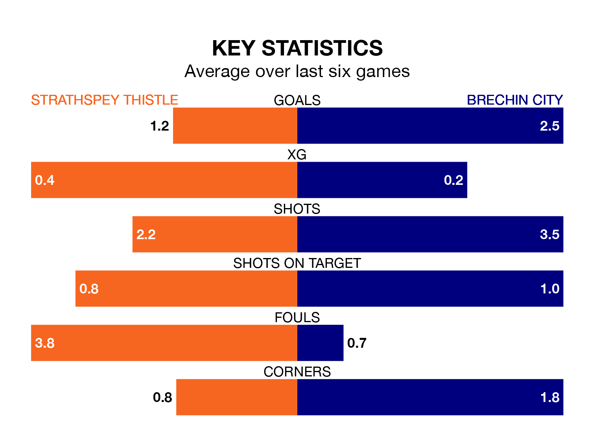

Mid-season relegation candidates Strathspey Thistle face a challenge against high-flying Brechin City at Seafield Park on Saturday.
Strathspey Thistle are rooted to the bottom of the Highland Football League table, and have picked up two wins and no draws in their 17 games to date.
Brechin, meanwhile, are top of the standings with 46 points, having won 15 and drawn one of their first 18 matches.
With 18 goals in 17 games so far this season, Strathspey Thistle are the league's joint-second-lowest scorers with 1.1 goals per game. And they are conceding more than average, letting in 62 goals at a rate of 3.6 per game.
Brechin, meanwhile, are above average scorers, with 2.6 goals per game, compared to a league average of 1.8. They have conceded 0.6 goals per game.
The home side are in bad form in Highland Football League, with one win and five losses from their last six games.
With four wins and two losses over that period, City's form is much better – they have taken 12 points from 18, compared to Strathspey Thistle's three.
In the last three years, Strathspey Thistle and Brechin have played each other on three occasions. Brechin won all of them.
Their last meeting was on September 16, when Brechin won 5-0 at home.
Strathspey Thistle's last match was on December 16, a 1-0 loss against Formartine United.
Brechin beat Lossiemouth 3-0 last time out, on Wednesday.
Updated: 08:51 (UTC), 25/01/24